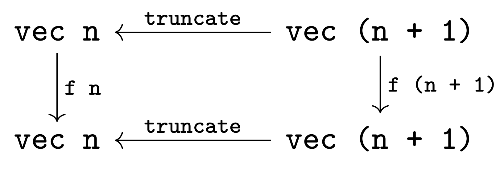

Require Import Coq.Lists.List. Require Import Coq.Program.Basics. Require Import Coq.Program.Equality. Require Import Coq.Logic.FunctionalExtensionality.
Consider the set \(2^\omega\) of infinite lists of natural numbers.
What are the "nice" functions \(2^\omega \to 2^\omega\)? As indicated by the quotes, the answer to this question is highly dependent on your aesthetic preferences. Naturally, different people with different needs have proposed different answers based on a wide variety of values of "nice".
One potential value of "nice" is the vacuous one: all (mathematically definable) functions \(2^\omega \to 2^\omega\) are allowed! Among these are functions that aren't even definable as functions in your favorite programming language, such as the function \(f : 2^\omega \to 2^\omega\) defined by \(f(1^\omega) = 0^\omega\) and \(f(s) = s\): the function which is the identity everywhere, except for on the stream of all ones, where it's the stream of all zeroes. This function is clearly not computable in any sense: in order to determine even the first element of the output stream, all infinitely-many elements of the input need to be inspected.
Restricting "nice" to mean "computable" restricts the class significantly. Indeed, the main result is the rule out functions like the one above. A classic result in computability theory is that the computable functions \(f : 2^\omega \to 2^\omega\) are continous in a particular sense [1] which means that any finite prefix of the output of \(f\) can only depend on a finite prefix of its input.
However, the computable functions can include some unwanted behavior. Of particular interest for the purposes of this piece is functions that "go back on their word". A simple example of this is the function defined by the equations \(f(00s) = 01s\), \(f(01s) = 10s\), \(f(1s) = 1s\). To see why this might be undesierable, consider a situation where the input list to the function is being streamed in, bit by bit, from some outside source. Similarly, suppose the output is being produced bit by bit, and is fed to some similar transformation down the line. Unfortunately, the function \(f\) cannot be implemented in this manner: if the first bit of input is a \(0\), the implementation must wait until the second bit arrives to emit the first bit of output. To faithfully implement this in such a "stream transformer" machine model, the machine would need the ability to either (a) block until the second bit arrives, or (b) emit a dummy value for the first output and then "retract" it once it got the second bit of input.
Our goal in this document is to characterize the stream functions \(f : 2^\omega \to 2^\omega\) which can be implemented as stream processing machines which are both (a) "productive", in the sense that they always emit an output for each input, and (b) are "truthful" in the sense that they never have to go back on their word.
To begin, let's define a coinductive [2]. type of streams, with elements drawn from a type A.
CoInductive stream : Type := | SCons : A -> stream -> stream.
More or less by definition, the functions stream -> stream which can be written in Coq
are computable. Unfortunately, we must work a bit harder to get the other properties.
Intuitively, both the truthfulness and productivity properties are facts about prefixes of streams.
Truthfulness says that passing a larger prefix yields only a larger output, while productivity says
precisely by how much the output should grow. Of course, while this makes intuitive sense, it's not
immediately clear how to define these properties formally. After all, stream functions f : stream -> stream
are defined on entire streams, not prefixes!
The insight required to guide us past this quandry is that truthful, productive functions on prefixes of streams should actually be defined in terms of functions on their prefixes. To investigate this idea further, let's introduce a type of prefixes.
Inductive vec : nat -> Type :=
| Empty : vec 0
| Snoc {n} : vec n -> A -> vec (S n).Above is a definition of length-indexed vectors, represented as snoc-lists. These will represent prefixes of streams.
The most important (for our purposes) operation on vectors is truncation: deleting the last element. Because we've implemented vectors as length-indexed snoc lists, truncate is trivial to implment, as shown below.
Definition truncate {n : nat} (l : vec (S n)) : vec n :=
match l in vec (S n) return vec n with
| Snoc l _ => l
end.We will also need the two "standard" list functions tail and cons, as well as some theorems relating them to Snoc and truncate.
Rather than take time to explain these later, we will simply introduce them here.
Fixpoint cons {n : nat} (x : A) (l : vec n) : vec (S n) := match l in vec n return vec (S n) with | Empty => Snoc Empty x | Snoc l' y => Snoc (cons x l') y end.n: nat
l: vec (S n)vec nl: vec 1vec 0n: nat
l: vec (S (S n))
IHn: vec (S n) -> vec nvec (S n)exact Empty.l: vec 1vec 0n: nat
l: vec (S (S n))
IHn: vec (S n) -> vec nvec (S n)n: nat
l: vec (S (S n))
IHn: vec (S n) -> vec n
n0: nat
X: vec (S n)
X0: A
H0: n0 = S nvec (S n)n: nat
l: vec (S (S n))
IHn: vec (S n) -> vec n
n0: nat
X: vec (S n)
X0: A
H0: n0 = S nvec nexact X. Defined.n: nat
l: vec (S (S n))
IHn: vec (S n) -> vec n
n0: nat
X: vec (S n)
X0: A
H0: n0 = S nvec (S n)forall (n : nat) (l : vec n) (x y : A), cons x (Snoc l y) = Snoc (cons x l) yforall (n : nat) (l : vec n) (x y : A), cons x (Snoc l y) = Snoc (cons x l) yn: nat
l: vec nforall x y : A, cons x (Snoc l y) = Snoc (cons x l) yforall x y : A, cons x (Snoc Empty y) = Snoc (cons x Empty) yn: nat
l: vec n
a: Aforall x y : A, cons x (Snoc (Snoc l a) y) = Snoc (cons x (Snoc l a)) yforall x y : A, cons x (Snoc Empty y) = Snoc (cons x Empty) yreflexivity.forall x y : A, Snoc (Snoc Empty x) y = Snoc (Snoc Empty x) yn: nat
l: vec n
a: Aforall x y : A, cons x (Snoc (Snoc l a) y) = Snoc (cons x (Snoc l a)) yn: nat
l: vec n
a, x, y: Acons x (Snoc (Snoc l a) y) = Snoc (cons x (Snoc l a)) yreflexivity. Qed.n: nat
l: vec n
a, x, y: ASnoc (Snoc (cons x l) a) y = Snoc (Snoc (cons x l) a) yforall (n : nat) (l : vec (S n)) (x : A), truncate (cons x l) = cons x (truncate l)forall (n : nat) (l : vec (S n)) (x : A), truncate (cons x l) = cons x (truncate l)n: nat
l: vec (S n)forall x : A, truncate (cons x l) = cons x (truncate l)n: nat
l: vec n
a: A
IHl: forall (n0 : nat) (l0 : vec (S n0)), n = S n0 -> l ~= l0 -> forall x : A, truncate (cons x l0) = cons x (truncate l0)forall x : A, truncate (cons x (Snoc l a)) = cons x (truncate (Snoc l a))n: nat
l: vec n
a: A
IHl: forall (n0 : nat) (l0 : vec (S n0)), n = S n0 -> l ~= l0 -> forall x : A, truncate (cons x l0) = cons x (truncate l0)forall x : A, truncate (cons x (Snoc l a)) = cons x (truncate (Snoc l a))n: nat
l: vec n
a: A
IHl: forall (n0 : nat) (l0 : vec (S n0)), n = S n0 -> l ~= l0 -> forall x : A, truncate (cons x l0) = cons x (truncate l0)
x: Atruncate (cons x (Snoc l a)) = cons x (truncate (Snoc l a))n: nat
l: vec n
a: A
IHl: forall (n0 : nat) (l0 : vec (S n0)), n = S n0 -> l ~= l0 -> forall x : A, truncate (cons x l0) = cons x (truncate l0)
x: Atruncate (Snoc (cons x l) a) = cons x (truncate (Snoc l a))reflexivity. Qed.n: nat
l: vec n
a: A
IHl: forall (n0 : nat) (l0 : vec (S n0)), n = S n0 -> l ~= l0 -> forall x : A, truncate (cons x l0) = cons x (truncate l0)
x: Acons x l = cons x lAdmitted.forall (n : nat) (l : vec (S n)) (x : A), tail (Snoc l x) = Snoc (tail l) xforall (n : nat) (l : vec (S (S n))), truncate (tail l) = tail (truncate l)n: nat
l: vec (S (S n))truncate (tail l) = tail (truncate l)n: nat
l: vec (S n)
a: A
IHl: forall (n0 : nat) (l0 : vec (S (S n0))), S n = S (S n0) -> l ~= l0 -> truncate (tail l0) = tail (truncate l0)truncate (tail (Snoc l a)) = tail (truncate (Snoc l a))n: nat
l: vec n
a, a0: A
IHl: forall (n0 : nat) (l0 : vec (S (S n0))), S n = S (S n0) -> Snoc l a ~= l0 -> truncate (tail l0) = tail (truncate l0)truncate (tail (Snoc (Snoc l a) a0)) = tail (truncate (Snoc (Snoc l a) a0))Admitted.n: nat
l: vec n
a, a0: A
IHl: forall (n0 : nat) (l0 : vec (S (S n0))), S n = S (S n0) -> Snoc l a ~= l0 -> truncate (tail l0) = tail (truncate l0)nat_rect (fun n : nat => vec (S n) -> vec n) (fun _ : vec 1 => Empty) (fun (n : nat) (IHn : vec (S n) -> vec n) (l : vec (S (S n))) => match l in (vec n0) return (n0 = S (S n) -> vec (S n)) with | Empty => fun H : 0 = S (S n) => False_rect (vec (S n)) (eq_ind 0 (fun e : nat => match e with | 0 => True | S _ => False end) I (S (S n)) H) | @Snoc n0 x x0 => fun H : S n0 = S (S n) => eq_rect_r (fun n1 : nat => vec n1 -> A -> vec (S n)) (fun (X : vec (S n)) (X0 : A) => Snoc (IHn X) X0) (f_equal (fun e : nat => match e with | 0 => n0 | S n1 => n1 end) H) x x0 end eq_refl) n (Snoc l a) = tail (Snoc l a)
Truncation is particularly interesting because it lets us reframe streams in terms of their prefixes.
A stream can be thought of as a family of vectors vs : forall n, vec n, one of each length,
such that the \(n+1\) st is just the \(n\) th with one element tacked on to the end.
Swapping the perspective around, this is to say that that vs n = truncate (vs (n + 1)).
Intuitively, this view of streams is consistent with their view as coinductively defined objects:
they are lists that we may unfold to any finite depth.
Viewing streams this way leads us to our first definition of productive & truthful functions on streams!
Record causal : Type := mkCausal {
f : forall n, vec n -> vec n;
caused : forall n l, f n (truncate l) = truncate (f (S n) l)
}.For historical reasons, these objects are called "causal functions", which consist of

- A family of maps
f n : vec n -> vec ntaking vectors of lengthnto vectors of lengthn. For a causal functioncand some natm, we will callf c mthem-th component ofc. The typing of these components ensures the "one-at-a-time" productivity of this family, viewed as a stream function. Vectors of length 1 yield vectors of length 1, and adding one more element to the input yields exactly one more element of output. But nothing in the type ensures that the first elmement remained the same. That's the job of the second component of the record, which consists of...- Proofs that the family
f"commutes with truncation", as shown in the commutative diagram below. Intuitively,f n (truncate l) = truncate (f (S n) l)says thatf nandf (S n)must agree on the firstnelements of their input: only the final element off (S n)can be "new".
Causal maps naturally act as functions A -> A by considering the f 1 : vec 1 -> vec 1 component as a map on
singleton lists.
Admitted.c: causal
x: AA
This should let us interpret causal functions as stream functions, i.e. turn a causal map that operates on finite prefixes of a stream into one that transforms whole streams.
Intuitively, the process is straightforward. Given a causal function c,
we will define its interpreation as a stream map interpCausal c : stream -> stream as the
function which takes a stream SCons x s, and returns the stream SCons y s',
where y is the result of using c as a function A -> A and passing x, and s' is the
result of the recursive call.
This intuitive idea is translated into code below.
CoFixpoint interpCausalWrong (c : causal) (s : stream) : stream :=
match s with
| SCons x s => let y := causalApply1 c x in
SCons y (interpCausalWrong c s)
end.Unfortunately, as the identifier suggests, this is wrong in an important way.
To understand why, consider the stream SCons a (SCons b s). The function interpCausalWrong
sends this to SCons a' (SCons b' s'), with a' = causalApply1 c a and b' = causalApply1 c b.
Unfolding the definition of causalApply1, this means that a' and b' are both the result of
applying the first component of c.
However, we would expect the first two bits of the output be the results of applying the
2nd component of c to the length-2 vector Snoc (Snoc a Empty) b.
To fix this, we must shift our perspective. If we've processed n elements of the stream so far,
We produce the n+1-st output by Snoc-ing the n+1-st input onto the prior n,
applying the n+1-st component of c, and then taking the tail.
This process is encoded by the function causalApplySnoc below.
Definition causalApplySnoc {n : nat} (c : causal) (l : vec n) (x : A) : A :=
match f c (S n) (Snoc l x) in vec (S n) return A with
| Snoc _ y => y
end.We can now write interpCausal by simply accumulating elements as we see them, and kicking the
whole process off with the empty stream.
CoFixpoint interpCausalAux {n : nat} (c : causal) (l : vec n) (s : stream) : stream := match s with | SCons x s => let y := causalApplySnoc c l x in SCons y (interpCausalAux c (Snoc l x) s) end. Definition interpCausal (c : causal) : stream -> stream := fun s => interpCausalAux c Empty s.
To our initual query of "which are the nice functions" stream -> stream,
interpCausal provides the answer: "those which arise as interpCausal c for some causal function c".
As it turns out, causal functions are just one formalism for capturing this class of stream maps!
Another is by way of string transducers, which are best thought of as stateful functions of type A -> A.
Formally, a transducer is a function that takes in an A, and produces both an output A, and a new transducer:
the new state.
CoInductive transd : Type := | Step : (A -> A * transd) -> transd. Definition step (t : transd) (x : A) : A * transd := match t with | Step f => f x end.
These also interpret as stream maps
CoFixpoint interpTransd (t : transd) (s : stream) : stream :=
match s with
| SCons x s' => let (y,t') := step t x in
SCons y (interpTransd t' s')
end.and as vector maps
Fixpoint stepN {n} (t : transd) (l : vec n) : transd * vec n := match l with | Empty => (t,Empty) | Snoc l' x => let (t',l'') := stepN t l' in let (y,t'') := step t' x in (t'',Snoc l'' y) end. Definition execN (t : transd) : forall n, vec n -> vec n := fun n l => snd (stepN t l).
and these vector maps are causal! We can take an automata, and turn its execN into a causal map
forall (t : transd) (n : nat) (l : vec n) (x : A), execN t (S n) (Snoc l x) = Snoc (execN t n l) (let (t', _) := stepN t l in fst (step t' x))forall (t : transd) (n : nat) (l : vec n) (x : A), execN t (S n) (Snoc l x) = Snoc (execN t n l) (let (t', _) := stepN t l in fst (step t' x))t: transd
n: nat
l: vec n
x: AexecN t (S n) (Snoc l x) = Snoc (execN t n l) (let (t', _) := stepN t l in fst (step t' x))t: transd
n: nat
l: vec n
x: Asnd (stepN t (Snoc l x)) = Snoc (snd (stepN t l)) (let (t', _) := stepN t l in fst (step t' x))t: transd
n: nat
l: vec n
x: Asnd (let (t', l'') := stepN t l in let (y, t'') := step t' x in (t'', Snoc l'' y)) = Snoc (snd (stepN t l)) (let (t', _) := stepN t l in fst (step t' x))t: transd
n: nat
l: vec n
x: A
t0: transd
v: vec nsnd (let (y, t'') := step t0 x in (t'', Snoc v y)) = Snoc (snd (t0, v)) (fst (step t0 x))t: transd
n: nat
l: vec n
x: A
t0: transd
v: vec n
a: A
t1: transdsnd (t1, Snoc v a) = Snoc (snd (t0, v)) (fst (a, t1))reflexivity. Qed.t: transd
n: nat
l: vec n
x: A
t0: transd
v: vec n
a: A
t1: transdSnoc v a = Snoc v at: transdforall (n : nat) (l : vec (S n)), execN t n (truncate l) = truncate (execN t (S n) l)t: transdforall (n : nat) (l : vec (S n)), execN t n (truncate l) = truncate (execN t (S n) l)t: transd
n: nat
l: vec (S n)execN t n (truncate l) = truncate (execN t (S n) l)t: transd
n: nat
l: vec n
a: A
IHl: forall (n0 : nat) (l0 : vec (S n0)), n = S n0 -> l ~= l0 -> execN t n0 (truncate l0) = truncate (execN t (S n0) l0)execN t n (truncate (Snoc l a)) = truncate (execN t (S n) (Snoc l a))t: transd
n: nat
l: vec n
a: A
IHl: forall (n0 : nat) (l0 : vec (S n0)), n = S n0 -> l ~= l0 -> execN t n0 (truncate l0) = truncate (execN t (S n0) l0)execN t n l = truncate (execN t (S n) (Snoc l a))t: transd
n: nat
l: vec n
a: A
IHl: forall (n0 : nat) (l0 : vec (S n0)), n = S n0 -> l ~= l0 -> execN t n0 (truncate l0) = truncate (execN t (S n0) l0)execN t n l = truncate (Snoc (execN t n l) (let (t', _) := stepN t l in fst (step t' a)))reflexivity. Qed. Definition transdToCausal (t : transd) : causal := mkCausal (execN t) (execN_caused t).t: transd
n: nat
l: vec n
a: A
IHl: forall (n0 : nat) (l0 : vec (S n0)), n = S n0 -> l ~= l0 -> execN t n0 (truncate l0) = truncate (execN t (S n0) l0)execN t n l = execN t n l
We can also go backwards! Causal maps define automata.
CoFixpoint causalToTransdAux {n : nat} (c : causal) (l : vec n) : transd := Step (fun x => let y := causalApply1 c x in (y, causalToTransdAux c (Snoc l x)) ). Definition causalToTransd (c : causal) : transd := causalToTransdAux c Empty.
| [1] | For the curious: by endowing \(2\) with the discrete topology and \(2^\omega\) with the product topology, the computable functions \(2^\omega \to 2^\omega\) are continuous. |
| [2] | We will not be discussing coinduction or cofixpoints in this document, but the unfamiliar reader can safely ignore this detail, and treat the coinductive definitions as just special syntax for defining datatypes that have infinite values. |
This document was written as my final project in Prof. Andrew Head's course
"Live and Literate Programming" in Fall 2022. After a semester of studying literate programing,
this case study left me with a few take-aways and recommendations for future designers of literate programming
tools for theorem provers like Coq.
* Literate programming tools should never enforce that the code in the woven (pdf/html output) view appear in the same order as it does in the original code view. Unfortunately, Alectryon requires definition-order documents. I would much prefer something like Torii where I can weave the code together in an order that makes pedagogical sense, but does not necessarily pass the proof checker. The writing style in this document is severely hampered by the need to present everything before it appears.
* Alectryon does not permit the hiding of definition bodies. Many of the theorems and definitions that appear in this document are "standard" in the sense that they require little mathematical insight to prove or develop. Some examples include the cons and tail functions on snoc-lists, as well as the compatability theorems like cons_snoc or truncate_cons. Unfortunately, Alectryon requires that if the statements and type signatures of these theorems and definitions are to be shown in the document, then their proofs and bodies must also be shown. This is significant cruft that draws the reader away from their real task understanding the imporant theorems and definitions.
* Alectryon is very difficult to write without the use of a custom emacs-based editing tool which allows one to fluidly change back and forth between code-primary and markdown-primary views. The philosophy of the tool is that neither view should be considered "primary", and that there is no third view that the code and markdown compile from. In practice, however, without the use of the emacs tool, the Coq format quickly becomes primary.